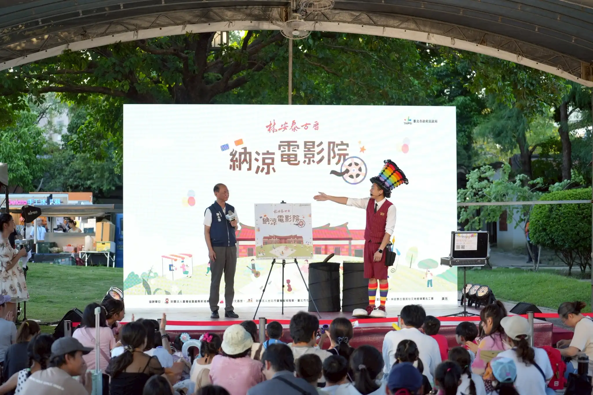
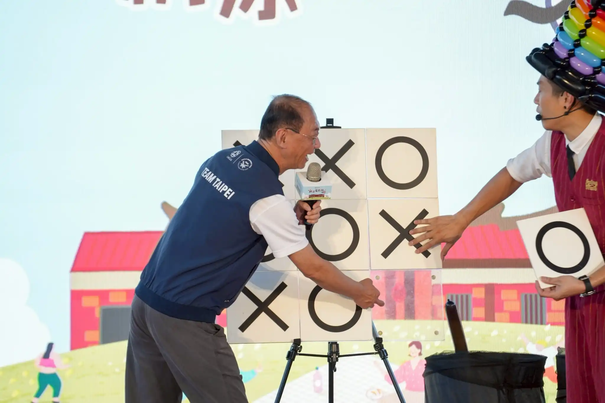
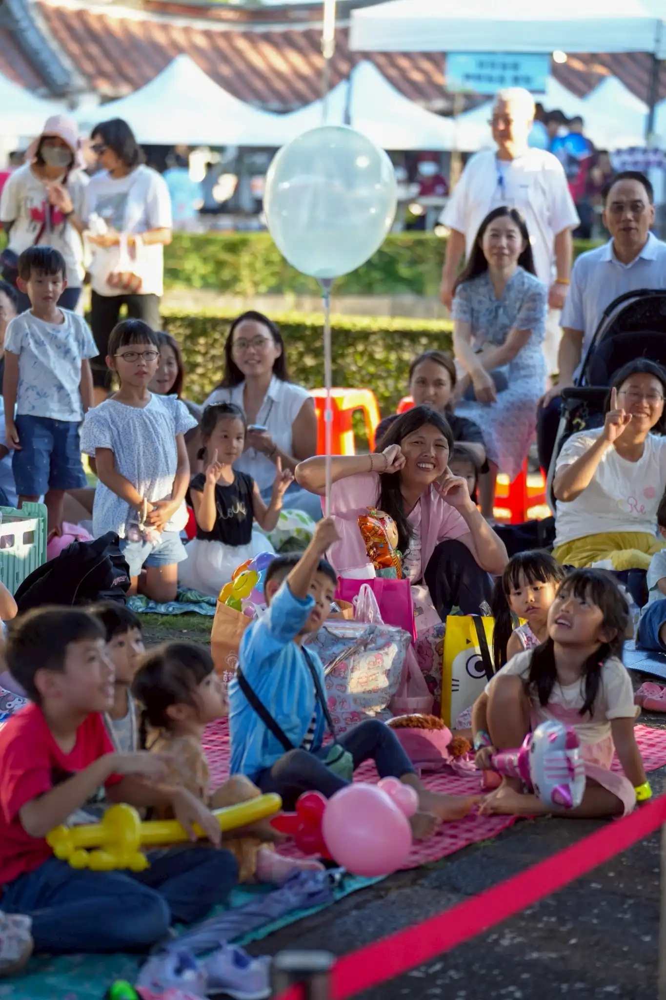

2025 台北納涼電影院｜氣球大叔魔術互動秀 x 陳永德局長 OOXX 魔術遊戲
當氣球遇上古蹟魔法，與市府攜手打造令人驚呼連連的舞台亮點！
📍 地點：台北市 林安泰古厝
台北市民政局：納涼電影院 × 氣球魔術秀
這場由 台北市民政局 主辦的年度盛事「納涼電影院」，於擁有深厚文化底蘊的林安泰古厝盛大舉行。活動邀請氣球大叔 Sony 擔任開場演出嘉賓，透過氣球結合魔術的高張力互動，為市民朋友帶來一場結合歷史場域與舞台藝術的魔法盛宴。

震撼亮點：主視覺 OOXX 魔術奇蹟
當晚表演的最高潮，莫過於 Sony 與 陳永德局長 共同完成的客製化魔術。在壓克力棋盤上隨機擺放的 O、X 標記，在最後揭曉瞬間，竟然不可思議地拼成了活動主視覺的圖樣！高明的魔術設計引發全場驚呼，將活動氣氛推向巔峰。

古蹟裡的親子笑聲：讓歷史活了起來
除了舞台亮點，現場的親子互動環節更是笑聲不斷。從氣球藝術作品到與台下孩子的零距離接觸，氣球大叔讓林安泰古厝在夏日晚間化身為巨大的魔法樂園，成功拉近了市府與市民間的距離。


「整場演出太精彩了，真的讓古蹟活了起來！氣球魔術秀讓原本靜態的電影活動變得非常生動活潑。」 — 市民家長與官方長官一致讚許
結語：台北官方活動指定的氣氛魔法師
氣球大叔 Sony 擁有豐富的公部門合作經驗，擅長根據各類場域特性（如古蹟、公園、商場）規劃表演流程。 若您正在籌辦 **台北地區的親子活動** 或 **大型政令宣導專案**，Sony 能為您提供兼具藝術質感與高人氣互動的專業服務。
🔥 更多台北指標性與官方活動案例：
- 👉 企業大型活動：玉山銀行家庭日｜兒童新樂園氣球迎賓表演紀錄
- 👉 官方萬人盛典：基隆城市博覽會｜國門廣場萬人魔術氣球秀紀錄
- 👉 台北高品質慶生：台北大安區抓週紀錄｜氣球佈置 × 親子互動演出